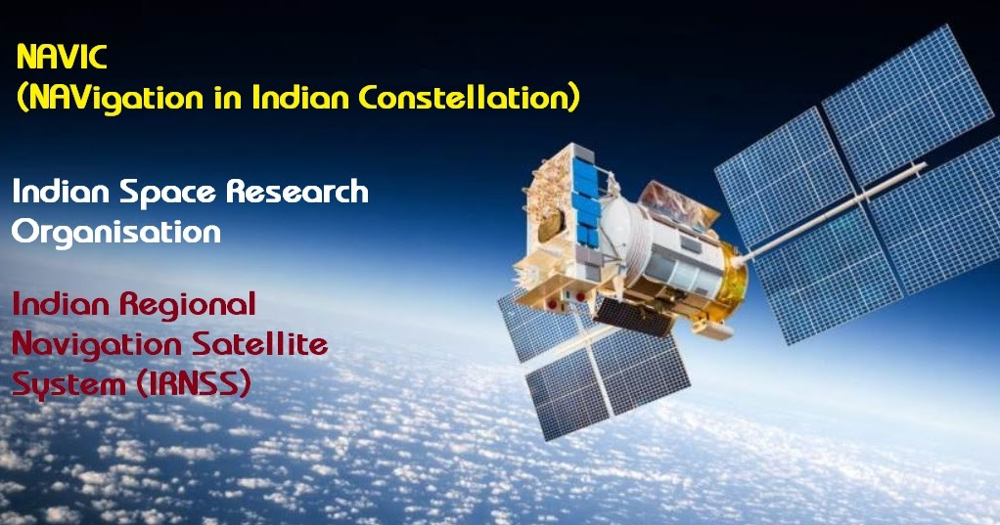
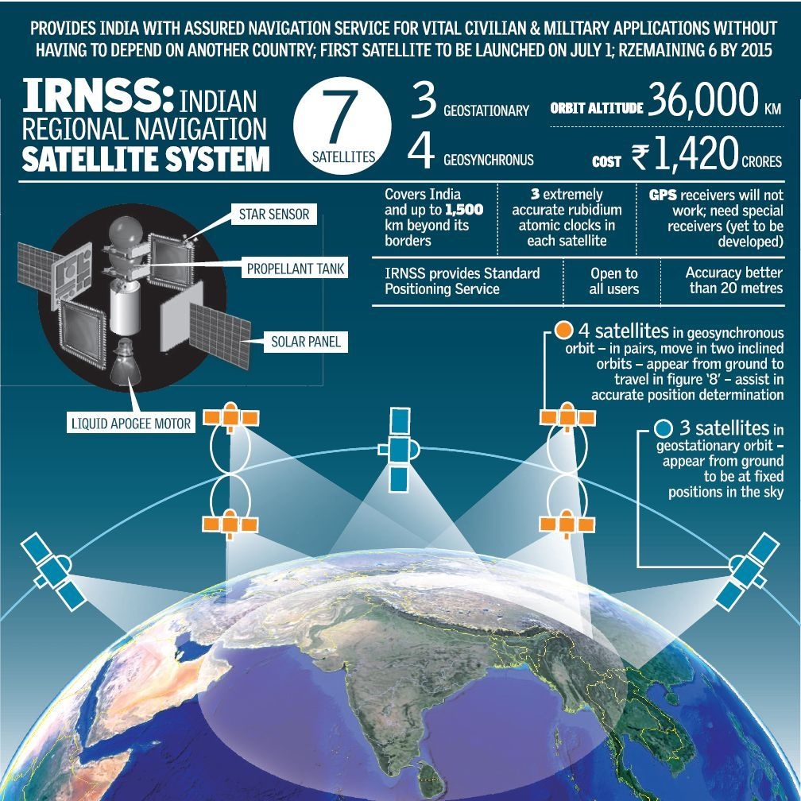
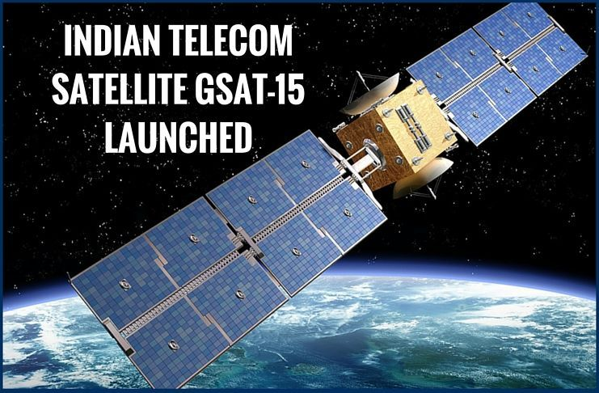

GSAT and NavIC, India's satellite navigation system, contribute to weather prediction by providing atmospheric data through their signals, which can be used to calculate important weather parameters like humidity
and precipitable water vapor, ultimately enhancing the accuracy of weather forecasts, especially in identifying and tracking storm systems and predicting rainfall patterns.
1.Atmospheric data collection: Both systems, particularly when equipped with dedicated meteorological payloads, can measure atmospheric conditions like temperature and moisture content at different altitudes, providing valuable data for weather models.
2.GPS Meteorology: Similar to GPS, NavIC's signal delay can be used to calculate the amount of water vapor in the atmosphere, which is crucial for predicting rainfall intensity and location.
3.Improved accuracy in localized weather forecasting: By providing precise data over specific regions, especially within India's boundaries where NavIC has better coverage, weather predictions for local areas can be more accurate.
4.Integration with weather models: The data collected by GSAT and NavIC satellites are incorporated into complex weather prediction models, allowing for better simulations and forecasts
GSAT (Geostationary Satellite) and NavIC (Navigation with Indian Constellation) significantly aid in disaster management by providing
real-time location data, enabling accurate monitoring of disaster events like floods, cyclones, earthquakes, and facilitating coordinated
relief efforts by pinpointing affected areas, thus allowing for faster and more efficient rescue operations and timely warnings to communities at risk.
1.Accurate Location Tracking: Both systems offer precise positioning information, allowing emergency responders to quickly identify the epicenter of a disaster and navigate to affected areas with high accuracy, even in remote regions with limited infrastructure.
2.Real-time Monitoring: Satellite imagery from GSat can provide continuous updates on the progression of a disaster, like flood inundation or cyclone movement, enabling authorities to make informed decisions and issue timely warnings.
3.Communication Support: In disaster situations where terrestrial communication networks may be disrupted, satellite communication through GSat can be crucial for coordinating rescue efforts and maintaining contact between response teams.
4.Early Warning Systems: By analyzing satellite data, authorities can detect potential disaster scenarios early on, allowing for proactive evacuation plans and mitigation measures.
5.Damage Assessment: Post-disaster, high-resolution satellite imagery from GSat can be used to assess the extent of damage to infrastructure and affected areas, aiding in prioritizing relief efforts.
1.Regional Focus: NavIC is specifically designed to provide accurate positioning data over India and its surrounding regions, making it particularly useful for monitoring and responding to disasters within the Indian subcontinent.
2.Resilience in Disasters: Even when terrestrial navigation systems are disrupted, NavIC can continue to function, providing critical location information during emergencies.
3.Civilian Applications: NavIC can be readily integrated into personal devices like smartphones, enabling citizens to access vital information about disaster situations and stay updated on evacuation routes.
GSAT, particularly the Indian navigation system called NavIC (Navigation with Indian Constellation), helps in navigation by
providing accurate positioning data through a network of satellites, allowing users to determine their location within India and
surrounding region, offering a reliable alternative to solely relying on GPS for navigation, especially in critical situations
where regional accuracy is crucial; this is particularly useful for applications like transportation, surveying, disaster
management, and military operations.
1.Regional Focus: Unlike GPS which offers global coverage, NavIC is specifically designed to provide high accuracy positioning within
India and a 1500km radius around it.
2.Enhanced Accuracy: Due to its satellite configuration, NavIC can provide positioning accuracy better than 20 meters.
3.Independent System:By having its own navigation system, India reduces dependence on foreign systems like GPS, allowing for greater
control over critical navigation data.
4.Applications: NavIC is used in various applications including transportation, maritime navigation, surveying, disaster management,
and personal mobility.
  